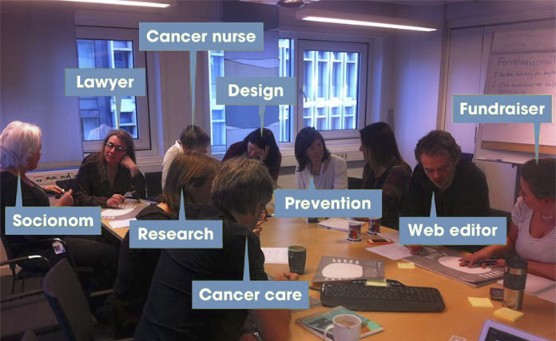

The Core Model Blog Post

In “The Core Model Blog Post”, the author Ida Aalen clams that to create better experience for web, designer need not only professional knowledge about web, but also need communication with users and businessmen. The author suggests that before making a website, designer must know what the business objective and user task in order to fulfill both purposes.
Core model is a thinking tool which help designer to identify the need of a lung cancer website with a group of people who might be researcher, nurse, web editor and so on. This help the design team to find out the business objectives and user tasks. The ultimate goal for this process is to let designer to think about the most important content of a website in order to create better interaction with the users.
My thought about this article is that I realize it is important to analyze to identify the most important content on the website first. Before reading the article, I thought designer just needs to design cool website. After reading this article, it is interesting that to create a effective website, designer would work with other teammate who are from different field of work.After finishing the design of a website, I think the next step should be let the actual users to use it, and get feedback from them.